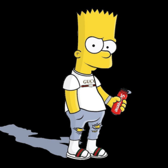
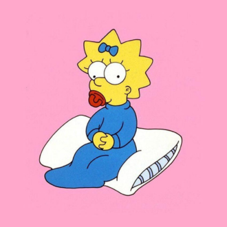

-
Homer

Descrição
Homer Simpson, famoso por sua sagacidade peculiar e amor por donuts, se aventurou no mundo do desenvolvimento de software. Como desenvolvedor, Homer traz seu estilo único e improvisado para o escritório.Homer adota uma abordagem descontraída e espontânea. Ele frequentemente procrastina, mas encontra soluções criativas no último minuto. Seu método de debugging envolve comentar partes aleatórias do código e ver o que acontece.
-
Margee
Descrição
Margee Simpson é uma desenvolvedora dedicada, carinhosa e sempre prática. Margee é aquela colega que organiza o caos com sua abordagem meticulosa, garantindo que todo o código esteja bem estruturado e documentado. Sua paciência infinita, desenvolvida ao lidar com Homer e as crianças, a torna excelente na resolução de bugs persistentes. Marge também trás um forte senso de ética e justiça ao ambiente de trabalho, promovendo a colaboração e a harmonia na equipe. Mesmo com a pressão dos prazos, ela mantem sua calma característica, encontrando tempo para apoiar seus colegas e balancear sua vida profissional com o cuidado à sua família.
-
Bart
Descrição
Bart Simpson é um desenvolvedor criativo, irreverente e um pouco rebelde. Encontra soluções inovadoras e rápidas, mas às vezes negligencia os detalhes. Bart mantem o ambiente de trabalho divertido e leve, sempre pronto para uma piada ou uma pegadinha.
-
Lisa
Descrição
Lisa Simpson é uma desenvolvedora extremamente inteligente, dedicada e organizada. Lisa tem paixão por aprender e seu perfeccionismo ao código, garante que os codigos sejam impecáveis e bem documentados. Ela é uma líder natural na equipe, sempre buscando soluções inovadoras e sustentáveis. Lisa também promove um ambiente de trabalho inclusivo e ético, incentivando seus colegas a darem o melhor de si.
-
Maggie
Descrição
Maggie Simpson é uma desenvolvedora, ela é habilidosa, observadora e eficiente. Mesmo sendo a mais nova, surpreende com sua capacidade de resolver problemas e contribuir com ideias inovadoras para a equipe.
-
Moe Szyslak
Descrição
Moe Szyslak é um desenvolvedor bruto, direto e com um senso de humor ácido. Moe traz uma abordagem prática e sem rodeios para a programação, focando em soluções eficientes e funcionais. Apesar de sua aparência intimidadora, ele é um colega leal e confiável, sempre disposto a ajudar quando necessário. No entanto, Moe também pode ser um pouco cético em relação a novas tecnologias, preferindo ficar com o que conhece e confia.